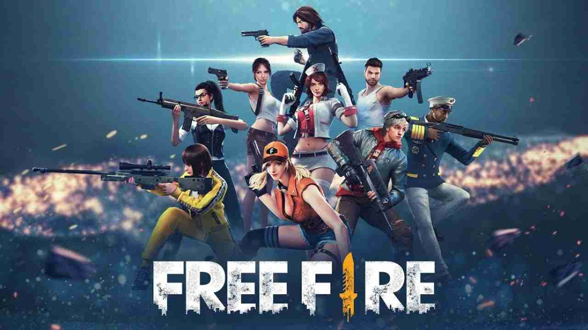
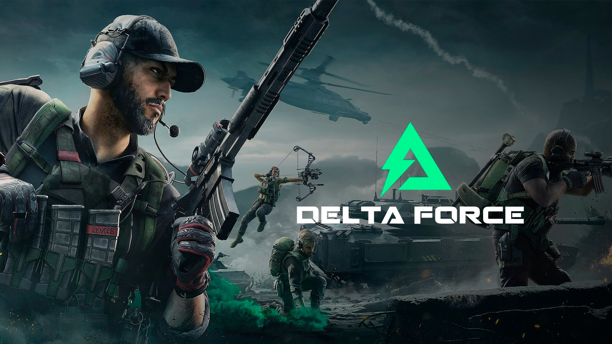
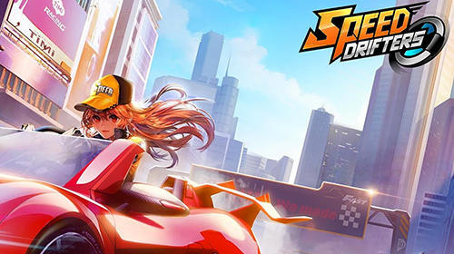

Free Fire
Free Fire é um jogo de tiro battle royale muito popular, desenvolvido pela Garena. Ele se destaca por ser mais leve e acessível, funcionando bem em dispositivos móveis com configurações mais modestas. No jogo, 50 jogadores são lançados em uma ilha e precisam lutar até ser o último sobrevivente. Ao longo da partida, a zona segura encolhe, forçando os jogadores a se moverem para áreas mais perigosas e tornando os confrontos mais intensos. Existem diferentes personagens, cada um com habilidades especiais, além de um arsenal variado de armas, veículos e equipamentos.
Delta Force
Garena Delta Force é um jogo de tiro tático em primeira pessoa (FPS) gratuito, desenvolvido pela TiMi J3 Studio e publicado pela Garena. Lançado oficialmente para PC em 20 de janeiro de 2025 e para dispositivos móveis (Android e iOS) em 21 de abril de 2025, o jogo oferece uma experiência de combate realista e estratégica
Free Fire
Garena Speed Drifters é um jogo de corrida estilo kart desenvolvido pela Garena, com gráficos animados e jogabilidade dinâmica. Lançado inicialmente como QQ Speed na China em 2010, o jogo foi adaptado para o público internacional sob o nome de Speed Drifters, sendo publicado por Garena em diversos países, incluindo o Brasil.